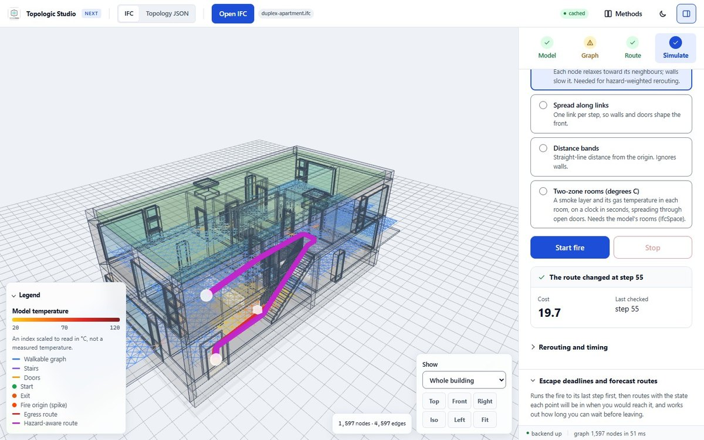
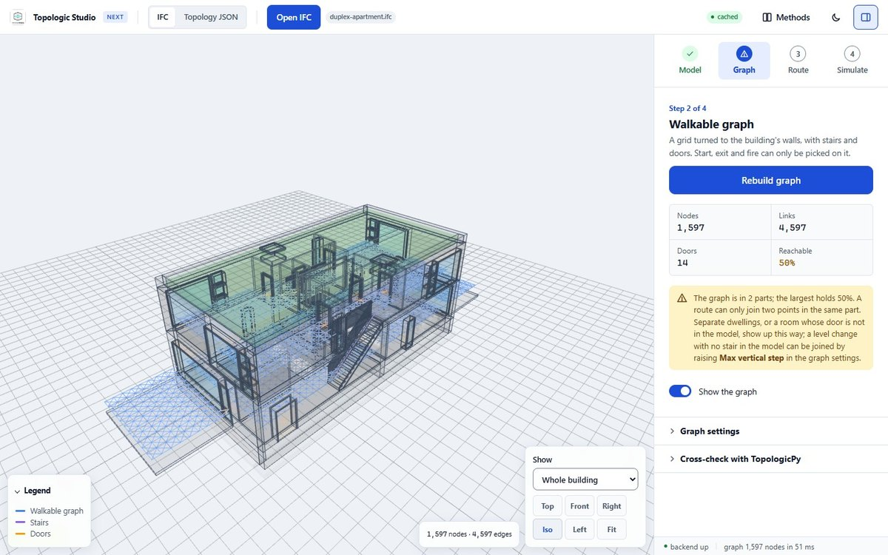
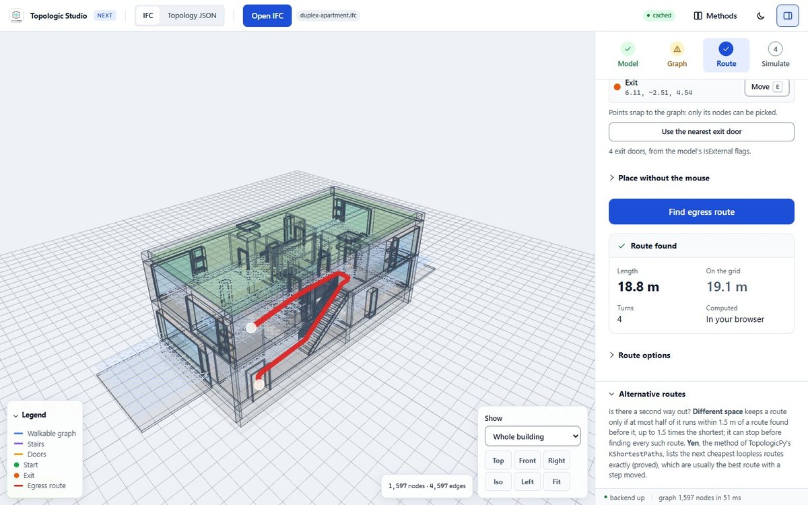
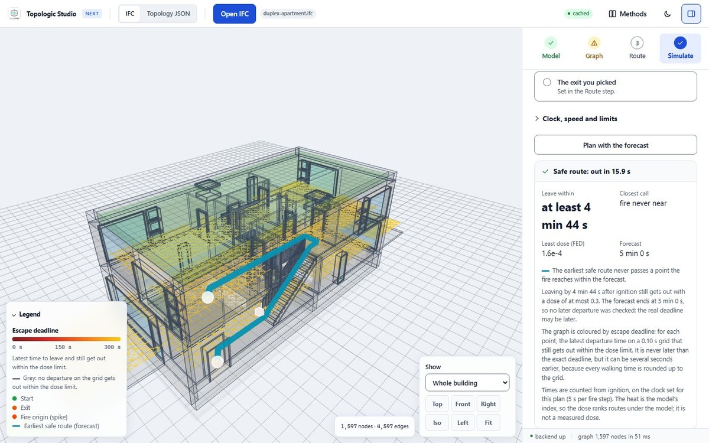
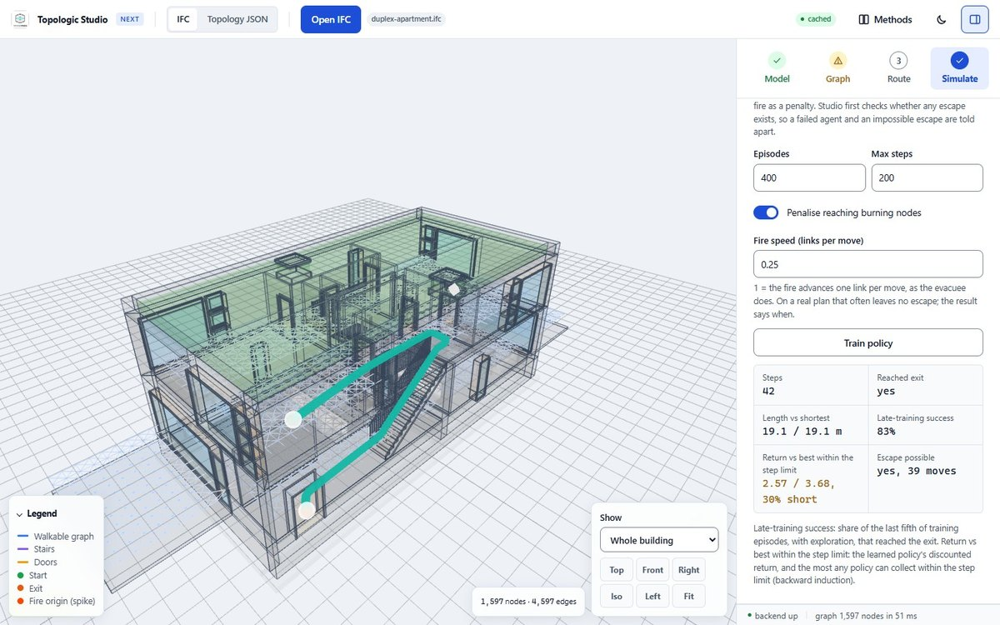
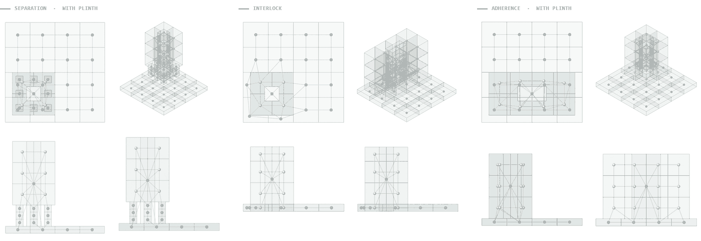
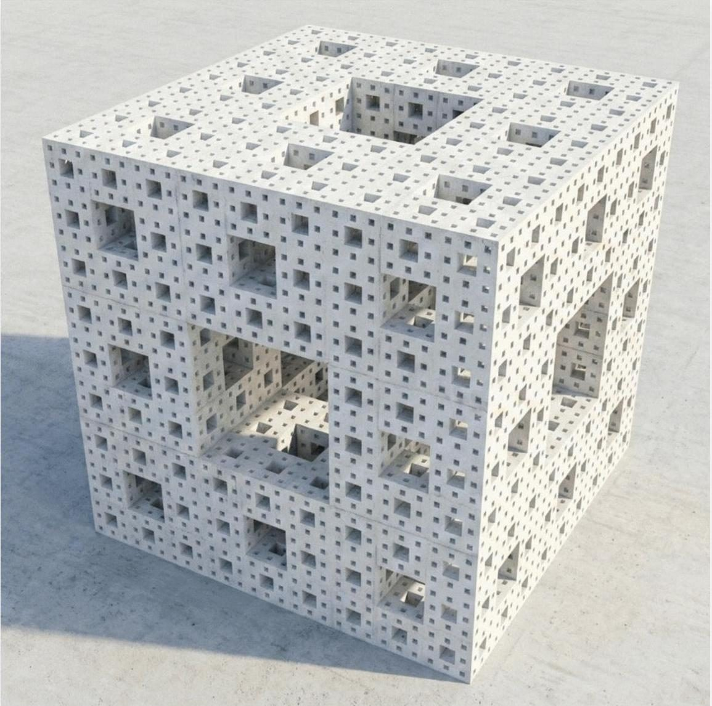
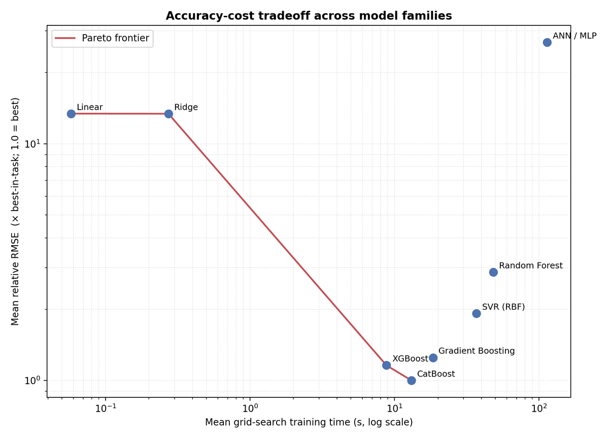

Topologic Studio: fire egress from IFC models
A browser-based tool that reads an IFC model, turns its floors, stairs and doors into a walkable graph, finds the shortest way out, and shows how a spreading fire changes that route.





Fire-egress analysis usually happens late, as a compliance check against a design that is already fixed. Moving it earlier means making it fast enough to run while the geometry is still changing, and simple enough that a designer will actually open it.
Topologic Studio, built on TopologicPy, does this in the browser. It reads an IFC file, counts its floors, stairs, doors and walls, and takes the exits from the file's own data. It then lays a walkable grid over every floor, 0.5 m apart and aligned with the walls: walls block the links that cross them, doors join the rooms on either side, and each stair is walked along its flight. For the Duplex example that is 1,597 points and 4,597 links, built in a few hundredths of a second.
From there it finds the shortest route to an exit and straightens it as a person would walk it, lists alternative routes, and spreads a fire step by step under one of four models, moving the route away from the heat as the fire grows. A forecast mode maps an escape deadline for every point on the graph, and a tabular Q-learning agent can be trained to find its own way out and compared against the best possible route.
The model stays on the user's device: opening, routing, fire spread, forecasts and reinforcement learning all run in the browser, and the whole workflow fits a phone screen. Every result states its assumptions, and the Methods page lists the properties proved in Lean 4. It is a research tool: its fire models give an index of heat, not a calibrated temperature, so its results do not replace a fire engineer's egress assessment.
More in Design Intelligence

Graph ML for building–ground topology
Unsupervised graph-level representation learning that classifies how a building meets the ground, trained on synthetic 3D topological datasets.
View project →
Encoding architectural intent across generative platforms
A pre-registered factorial study of how AI image-generation platforms handle architectural instruction, benchmarked against geometry that is hard to fake.
View project →
Benchmarking machine-learning models for building energy demand
Eight model families ranked under one protocol for predicting heating and cooling loads across single-zone and multi-zone building topologies.
View project →